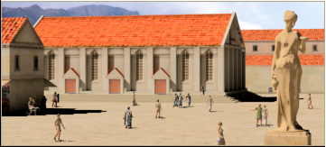

RTR: Imperium Surrectum
RTR: Imperium SurrectumJustice System
3 levels, each replacing the one before it — you upgrade in place rather than building alongside.
Magistrates' Court (Civic) → Court of Law (Civic) → Magnificent Court of Law (Civic)
Levels at a glance
| Level | Cost | Build time | Minimum settlement | Upgrades to | Level | Cost | Build time | Minimum settlement | Upgrades to | ||
|---|---|---|---|---|---|---|---|---|---|---|---|
| Magistrates' Court (Civic) | 5,000 | 5 | city | Court of Law (Civic) | Court of Law (Civic) | 10,000 | 7 | large city | Magnificent Court of Law (Civic) | ||
| Magnificent Court of Law (Civic) | 15,000 | 10 | huge city | — |
Costs in denarii, build time in turns.
Magistrates' Court (Civic)

A local magistrate deals with everyday infractions, crimes and matters of property
The rule of law reigns in this city and every ne'er-do-well knowns that only one misstepp can lead them in front of the magistrate. While each man may present his case as best as he can before this lawgiver mercy is never in great supply.
Wording varies by culture: 5 versions of this description exist in the game files.
| Cost | 5,000 denarii | Build time | 5 turns | Minimum settlement | city | Upgrades to | Court of Law (Civic) |
Requirements — all of these must hold before this level can be built.
- any faction
- the region does not have the hidden resource
nobuild(nobuilding) - Government Building
- no building tagged
civicis built or queued here (no_other_civic) - Local Market at Forum or above is built here
Show the condition as the game files write it (the player's part)
factions { all, } and nobuilding and requires_gov and no_other_civic and building_present_min_level market forum
What it does
- taxable income -8 to -4, scaling with settlement size
Show 5 effects that apply only in the circumstances shown
- +2 public order (law) — only when
indirect_govs - +3 public order (law) — only when
direct_govs - +1 public order (happiness) — only when
indirect_govs - Local law (client state or indirect rule): gives a happiness bonus but a decreased law bonus — only when
indirect_govs - State law (homeland or direct rule): gives increased law bonus and culture conversion — only when
direct_govs
Court of Law (Civic)

Roman law is both a thing set in stone and a living thing within these halls
In this great basilica many officials sit in judgement on matters from the most mundane contract disputes to the most profound matters of state. Each lawsuit is treated as a matter of religion. In the portico's of the court lawyers can be found to plead any case no matter their merit. While laws are codified and set in stone it is still as much a matter of retorical art whether one can get away with misdeeds or get there way in a dispute. Yet as long as the people feel they are protected by law the city benefits greatly.
Wording varies by culture: 2 versions of this description exist in the game files.
| Cost | 10,000 denarii | Build time | 7 turns | Minimum settlement | large city | Upgrades to | Magnificent Court of Law (Civic) |
Requirements — all of these must hold before this level can be built.
- your faction is one of
carthaginian, eastern, anatolian, egyptian, iranian, indian, greek, w_hellenistic, e_hellenistic, roman, iberian(written_law_factions) - the region does not have the hidden resource
nobuild(nobuilding) - Government Building
- no building tagged
civicis built or queued here (no_other_civic) - Local Market at Forum or above is built here
- Indirect Rule
Show the condition as the game files write it (the player's part)
written_law_factions and nobuilding and requires_gov and no_other_civic and building_present_min_level market forum and gov_tier_2
What it does
- taxable income -12 to -8, scaling with settlement size
Show 11 effects that apply only in the circumstances shown
- +3 public order (law) — only when
indirect_govs and not paper_resource and written_law_factions - +4 public order (law) — only when
direct_govs and not paper_resource and written_law_factions - +4 public order (law) — only when
indirect_govs and paper_resource and written_law_factions - +5 public order (law) — only when
direct_govs and paper_resource and written_law_factions - +2 public order (law) — only when
indirect_govs and not written_law_factions - +3 public order (law) — only when
direct_govs and not written_law_factions - +2 public order (happiness) — only when
indirect_govs and written_law_factions - Local law (client state or indirect rule): gives a happiness bonus but a decreased law bonus — only when
indirect_govs - State law (homeland or direct rule): gives increased law bonus and culture conversion — only when
direct_govs - Additional law bonus due to paper resources: papyrus or parchment(livestock) — only when
paper_resource and written_law_factions - No additional law bonus due to lack of paper resources: papyrus or parchment(livestock) — only when
not paper_resource and written_law_factions
Religious belief — spreads 23 beliefs, by how much depending on what the region already believes.
Show the 23 beliefs
- Aeolian +1
- Arcadian +1
- Armenian +1
- Assyrian +1
- Bosporan +1
- Cappadocian +1
- Carian +1
- Cilician +1
- Dorian +1
- Epirote +1
- Greco-Bactrian +1
- Indian +1
- Ionian +1
- Iranian +1
- Italic +1
- Judaean +1
- Lycian +1
- Macedonian +1
- Mesopotamian +1
- Northwest Greek +1
- Paphlagonian +1
- Phoenician +1
- Pisidian +1
Magnificent Court of Law (Civic)

A great monument to the true monument that is roman law
In these great halls many legal matters are considered and rendered judgement upon by the highest elected judiciary officials. At times a lawsuit may even be considered a matter of state and brought before the consuls themselves, as the highest legal authority of the Republic. While it may be a place no citizen necessarily wants to end up, its presence is a great reassurence to the law-abiding and the honest. While the bodies of the less abiding and less honest fill the cells, the torture chambers and end up hung on crosses at the city entrance.
Wording varies by culture: 2 versions of this description exist in the game files.
| Cost | 15,000 denarii | Build time | 10 turns | Minimum settlement | huge city |
Requirements — all of these must hold before this level can be built.
- your faction is one of
carthaginian, eastern, anatolian, egyptian, iranian, indian, greek, w_hellenistic, e_hellenistic, roman, iberian(written_law_factions) - the region does not have the hidden resource
nobuild(nobuilding) - Government Building
- no building tagged
civicis built or queued here (no_other_civic) - Local Market at Large Forum or above is built here
- Direct Rule or Homeland
Show the condition as the game files write it (the player's part)
written_law_factions and nobuilding and requires_gov and no_other_civic and building_present_min_level market great_forum and direct_govs
What it does
- taxable income -16 to -12, scaling with settlement size
Show 11 effects that apply only in the circumstances shown
- +3 public order (law) — only when
indirect_govs and not paper_resource and written_law_factions - +5 public order (law) — only when
direct_govs and not paper_resource and written_law_factions - +5 public order (law) — only when
indirect_govs and paper_resource and written_law_factions - +7 public order (law) — only when
direct_govs and paper_resource and written_law_factions - +1 public order (law) — only when
indirect_govs and not written_law_factions - +2 public order (law) — only when
direct_govs and not written_law_factions - +2 public order (happiness) — only when
indirect_govs and written_law_factions - Local law (client state or indirect rule): gives a happiness bonus but a decreased law bonus — only when
indirect_govs - State law (homeland or direct rule): gives increased law bonus and culture conversion — only when
direct_govs - Additional law bonus due to paper resources: papyrus or parchment(livestock) — only when
paper_resource and written_law_factions - No additional law bonus due to lack of paper resources: papyrus or parchment(livestock) — only when
not paper_resource and written_law_factions
Religious belief — spreads 23 beliefs, by how much depending on what the region already believes.
Show the 23 beliefs
- Aeolian +2
- Arcadian +2
- Armenian +2
- Assyrian +2
- Bosporan +2
- Cappadocian +2
- Carian +2
- Cilician +2
- Dorian +2
- Epirote +2
- Greco-Bactrian +2
- Indian +2
- Ionian +2
- Iranian +2
- Italic +2
- Judaean +2
- Lycian +2
- Macedonian +2
- Mesopotamian +2
- Northwest Greek +2
- Paphlagonian +2
- Phoenician +2
- Pisidian +2
What the shorthands in those conditions stand for (9)
| Shorthand | Stands for | Shorthand | Stands for | Shorthand | Stands for | Shorthand | Stands for |
|---|---|---|---|---|---|---|---|
direct_govs | building_present governmentC or building_present governmentD | gov_tier_2 | building_present_min_level governmentB gov2 or building_present_min_level governmentC gov3 | homeland | any one of 221 alternatives — too long to quote here | indirect_govs | building_present governmentA or building_present governmentB |
no_other_civic | no_building_tagged civic queued | nobuilding | not hidden_resource nobuild | paper_resource | resource papyrus or hidden_resource papyrus_supply_built factionwide or hidden_resource hides_supply_built factionwide | requires_gov | building_present governmentA or building_present governmentB or building_present governmentC or building_present governmentD |
written_law_factions | factions { carthaginian, eastern, anatolian, egyptian, iranian, indian, greek, w_hellenistic, e_hellenistic, roman, iberian, } |